Part1: Sampling loops
Part1.1, 1.2 and 1.3
First, I resized the image to size 64 * 64 to fit the requirement of the model input. According to the function:
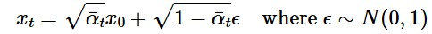where x0 is the clean image, e can be given by the function torch,rand_like, and cumprod alpha can be taken from the model itself, we get three noise images from different timesteps [250, 500, 750]
 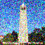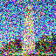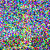
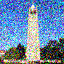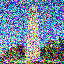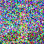By using different method (gaussian blur and unet one step denoise), I got the following results
The first line contains the results from one-step unet denoise, which are clearly better than the results from gaussian blur
Part1.4 Iterative denoise
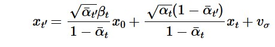These are the denoise results from t=90,240,390,540,890
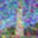The first one is the raw image, second one is the result from one step denoise and third one is from iterative denoise and last one is gaussian denoise. As we can see, iterative denoise can contain more details from the image.
Part1.5
By using the prompt: 'a high quality photo ', the model can generate images form a random noise. Some of them seemed weird,
Part1.6
By introducing the classifier free guidance in iterative denoise, we can improve the image quality. And the conditional prompt is 'a high quality photo' and unconditional prompt is ' '(null)

part1.7
To achieve the SDEit algorithim, I set a list of start point [1,3,5,6,10. 20], larger start point should get a image that is more similar compared to small start point.

Part1.7.1
After part1.7, I tried the same algorithm on non realistic images and get a fine result
 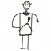
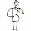
part1.7.2
In the experiment, I used the RePaint technique to repair the top of a bell tower. A binary mask was used to delineate the areas in need of restoration. During each step of the denoising diffusion cycle, areas outside the mask were forced to match the original image content, while areas within the mask were updated through a generative model.
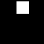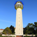

Part1.7.3
By using different prompt, we can force model to output desired image. For example, using "a rocket" on campanile or "a photo of dog" on Captain Picard.
Part1.8
By using two different kinds of prompt, we can get noise_est1 and noise_est2, fliping the second one and average it onto first one, we get conditional noise in visual anagram. Then we handle the noise like CFG, and we can get the final result.

Prompt 2: an oil painting of an old man


Prompt 2: a photo of a hipster barista
Prompt 2: a pencil
Part1.9
By using two different kinds of prompt, we can get noise_est1 and noise_est2, using gaussian blur to get the low frequency of noise1 and 2, then using the formula that high_freq = raw_noise - low_freq_noise to get the high frequency result.
The following results are skull and waterfall', 'rocket and pencil', 'a man with a hat and a dog'